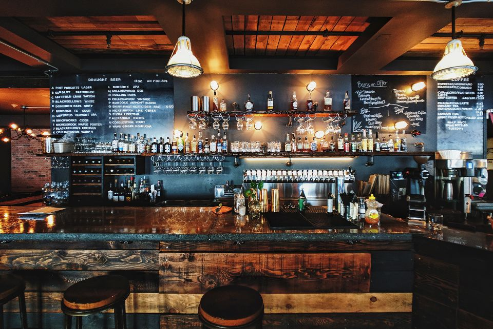
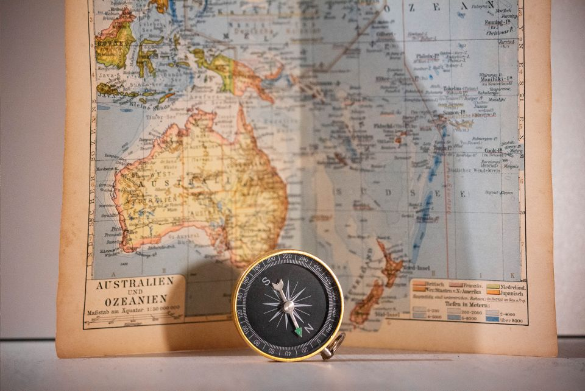

About Us
Haukai Restaurant specialises in Māori kai and is based in the Bay of Islands.
It was started by a couple who are keen on creating a business that would appeal to locals and tourists visiting the area.
The owners also want customers to experience te ao Māori with the use of karakia for blessing food and other Māori culture
Opening Hours
The restaurant is only open in the evenings at the moment, from Wednesday to Sunday inclusive.
| Monday | Closed |
|---|---|
| Tuesday | Closed |
| Wednesday | 5pm - 11pm |
| Thursday | 5pm - 11pm |
| Friday | 5pm - 11pm |
| Saturday | 5pm - 11pm |
| Sunday | 5pm - 11pm |

Contact Us
| Address | 1 Island Street Kerikeri |
|---|---|
| Bay of Islands | |
| Phone | (09) 401-4019 |
| info@thehaukai.com |